| Unidade sentinela | Nº de SE com coleta de amostras | Nº de SE no período | Indicador 2 (%) | Classificação |
|---|---|---|---|---|
| UPA Zona Sul (Maringá) | 36 | 38 | 94.7 | Meta Atingida |
| UPA Sarandi (Sarandi) | 37 | 38 | 97.4 | Meta Atingida |
Indicadores da NT nº 9/2025-2026
A classificação de desempenho segue as faixas do Caderno de Análise: Silencioso (0%) · Baixíssimo Desempenho (1-20%) · Baixo Desempenho (21-80%) · Meta Atingida (81-100%) — exceto onde indicado de outra forma. O gauge (velocímetro) segue o mesmo padrão visual usado no Caderno de Análise para ilustrar essas faixas, mas aqui a agulha aponta para o valor real de cada unidade sentinela, não é só ilustrativo.
Os Indicadores 1 e 10 não aparecem aqui: dependem da Ficha de Agregado Semanal do Sivep-Gripe (total de atendimentos gerais), que não está nesta base de dados individual. Consulte o relatório pronto do próprio SIVEP-Gripe (menu Relatórios > Indicadores) para esses dois.
Indicadores de Processo
Medem a regularidade da coleta e do envio de amostras pelas unidades sentinelas.
Indicador 2 — % de semanas com coleta de amostras
Meta esperada: ≥ 80% (Meta Atingida).
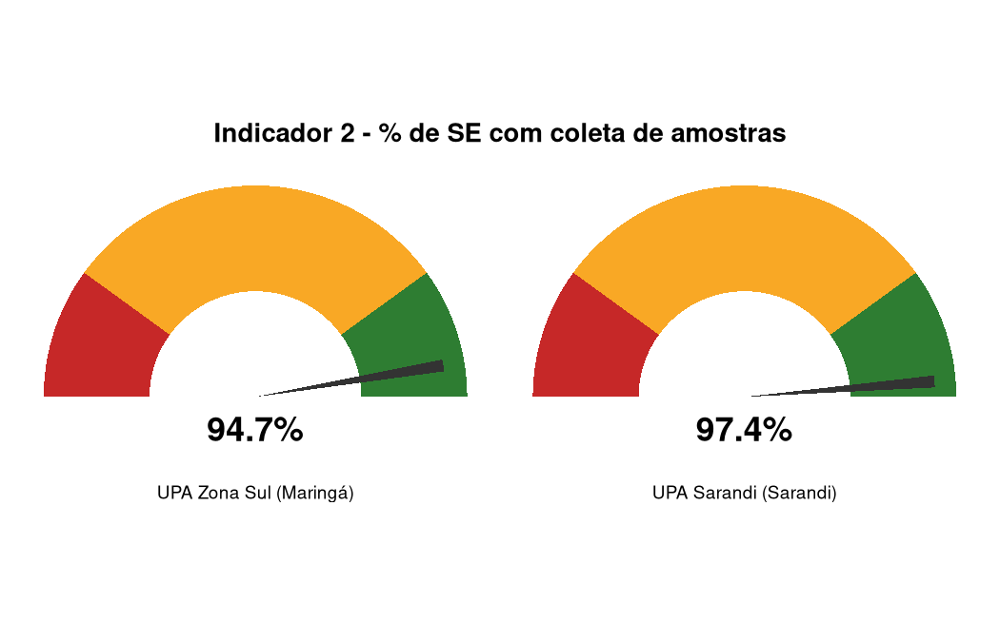
Base comum aos Indicadores 2, 3 e 4: nº de amostras de SG coletadas por semana epidemiológica, por unidade sentinela.
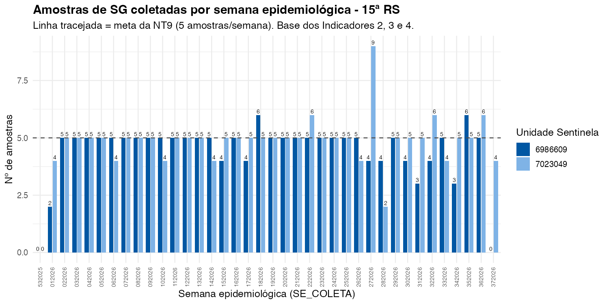
Indicador 3 — Média de amostras coletadas por semana
Meta esperada: 5 amostras/semana (meta específica da NT9/PR — Tabela 2, “Excelente”). Não é percentual, então não usa a classificação padrão acima; a classificação nacional do Caderno de Análise (Silencioso · Abaixo do recomendado 1-3 · Dentro do recomendado 4-20 · Acima do recomendado 21+) é mais frouxa que a meta do Paraná.
Este gauge usa uma escala própria, normalizada até 25 amostras/semana (não é %) — a posição da agulha é proporcional a essa escala, mas o número mostrado é o valor real de amostras/semana.
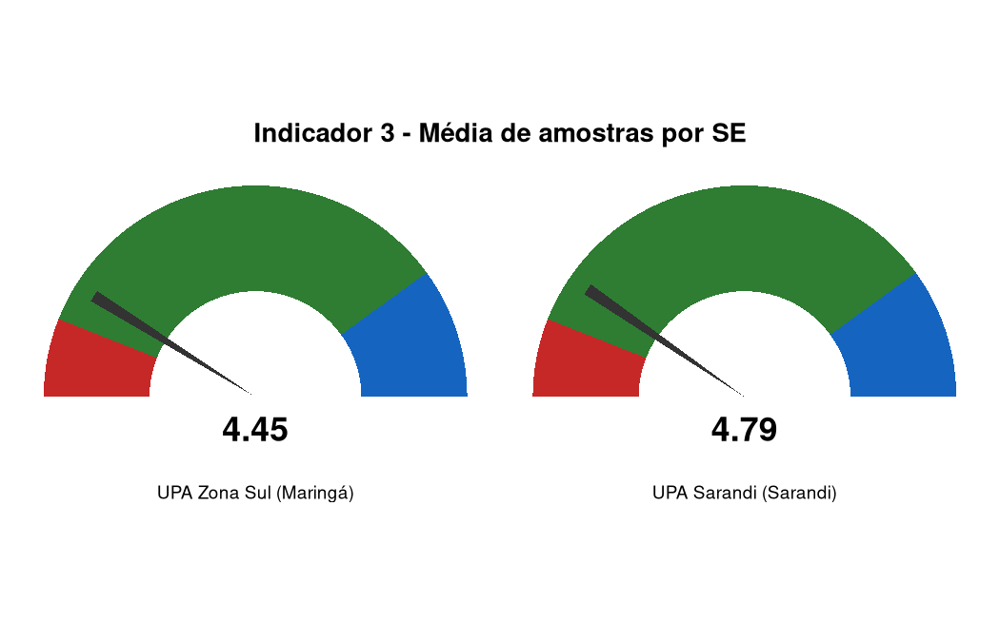
| Unidade sentinela | Total de amostras coletadas | Nº de SE no período | Média de amostras por SE | Classificação |
|---|---|---|---|---|
| UPA Zona Sul (Maringá) | 169 | 38 | 4.45 | Dentro do recomendado |
| UPA Sarandi (Sarandi) | 182 | 38 | 4.79 | Dentro do recomendado |
Indicador 4 — Homogeneidade de envio de amostras
Meta esperada: ≥ 80% (Meta Atingida). Calculado como a média entre o Indicador 2 e o % de semanas com 4 a 20 amostras.
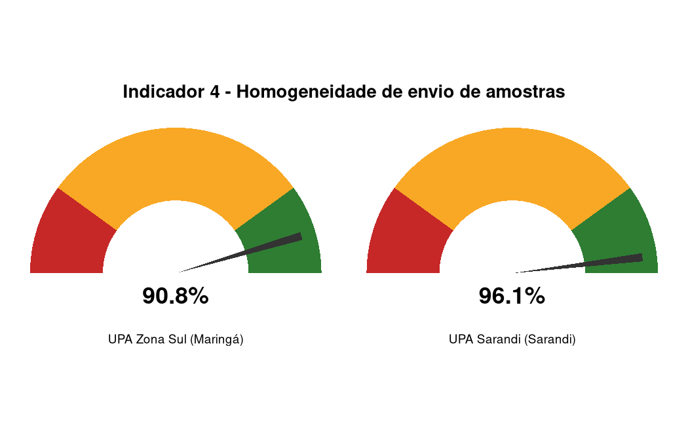
| Unidade sentinela | Nº de SE no período | Nº de SE com 4 a 20 amostras | % de SE com 4 a 20 amostras | Indicador 2 (%) | Indicador 4 (%) | Classificação |
|---|---|---|---|---|---|---|
| UPA Zona Sul (Maringá) | 38 | 33 | 86.8 | 94.7 | 90.8 | Meta Atingida |
| UPA Sarandi (Sarandi) | 38 | 36 | 94.7 | 97.4 | 96.1 | Meta Atingida |
Indicadores de Qualidade
Medem a completude e a oportunidade dos dados registrados nas fichas.
Indicador 5 — % de registros que atendem à definição de caso de SG
Meta esperada: ≥ 80% (Meta Atingida). Definição vigente da NT9: infecção respiratória, início ≤10 dias, ≥2 sintomas com ≥1 respiratório.
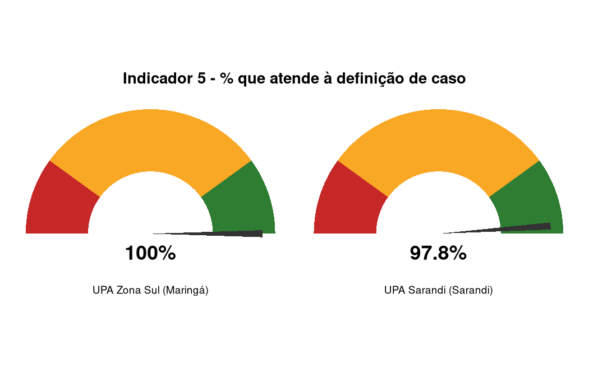
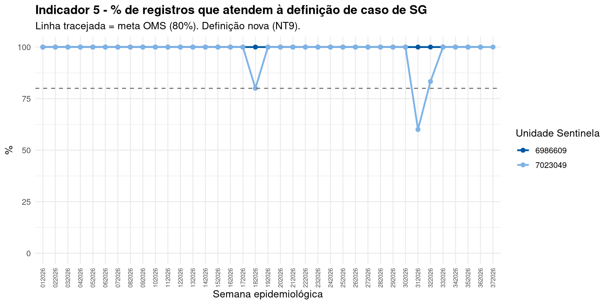
Indicador 7 — % de amostras processadas por RT-PCR
Meta esperada: ≥ 80% (Meta Atingida) — mas o Caderno de Análise alerta que valores abaixo de 95% já indicam desperdício de amostra, um critério mais rígido que a meta genérica.
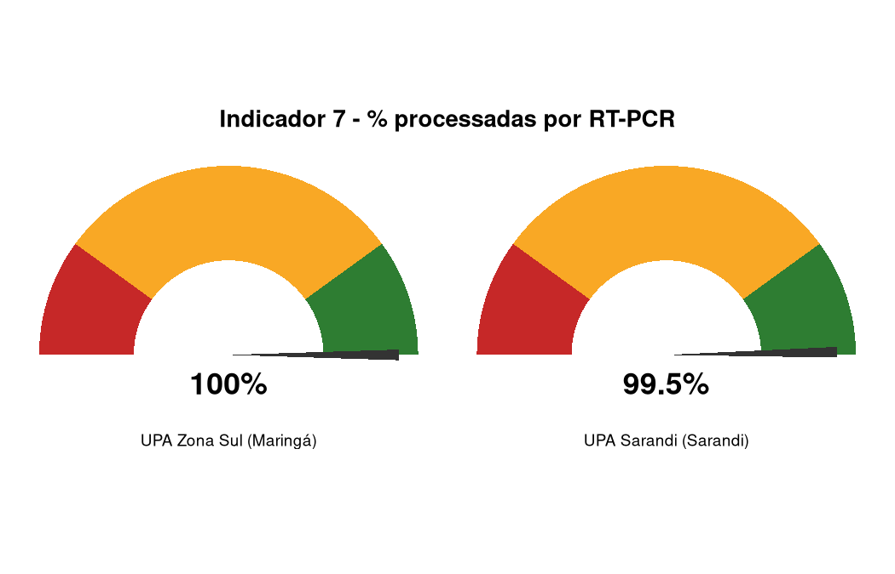
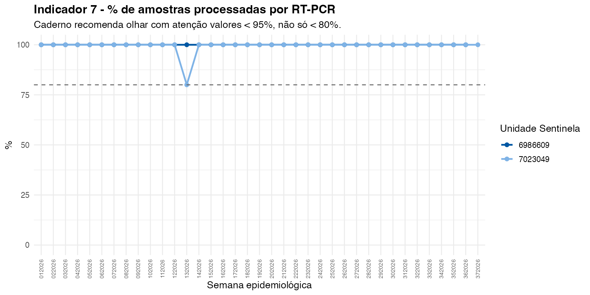
Indicador 8 — % de resultados de RT-PCR em até 10 dias da coleta
Meta esperada: ≥ 80% (Meta Atingida).
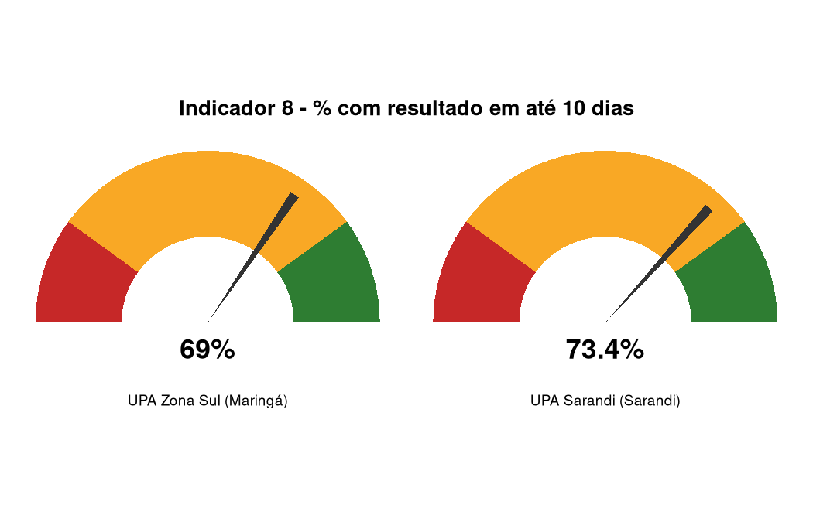
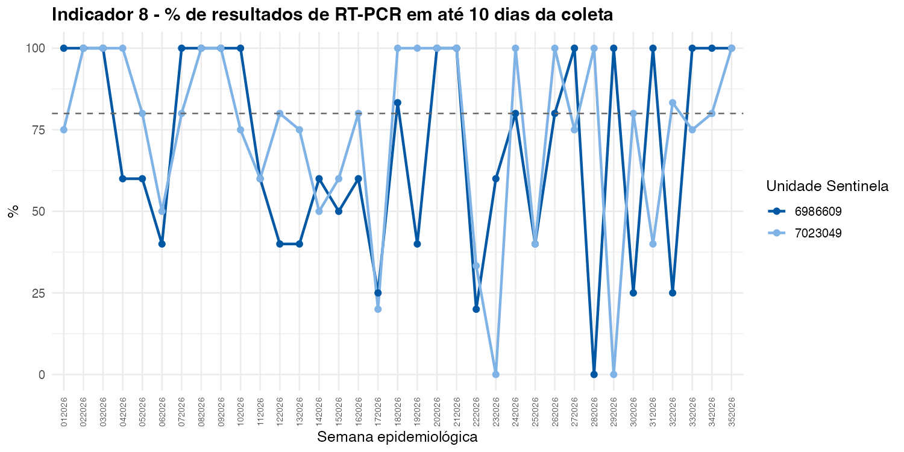
Indicador 9 — % de casos encerrados em até 60 dias
Meta esperada: ≥ 80% (Meta Atingida).
As últimas ~8-9 semanas deste gráfico tendem a cair de forma artificial: um caso notificado perto do fim do período analisado ainda não teve tempo de completar os 60 dias, então conta como “não encerrado” mesmo que a unidade feche o caso normalmente depois (censura à direita). Ao ler o gauge/gráfico, desconsidere a queda nas semanas mais recentes se o período analisado terminar perto de hoje.
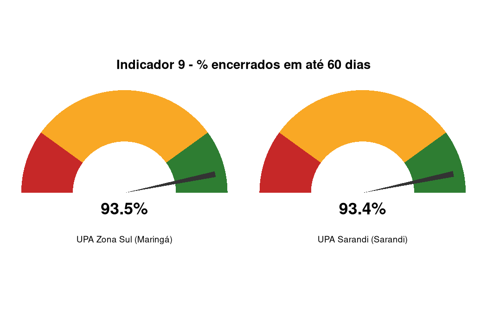
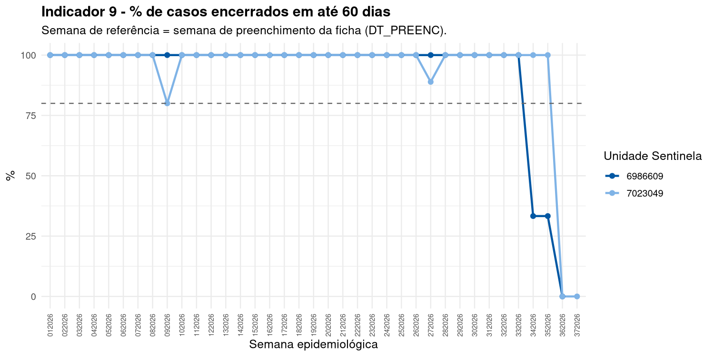
Indicadores de Resultado
Indicador 11 — Proporção de positividade dos vírus testados
Meta esperada: não há meta definida na NT9 — é um indicador de resultado/vigilância (descreve a circulação viral), não de desempenho da unidade. Por isso não tem gauge — não existe uma faixa “boa” ou “ruim” de positividade.
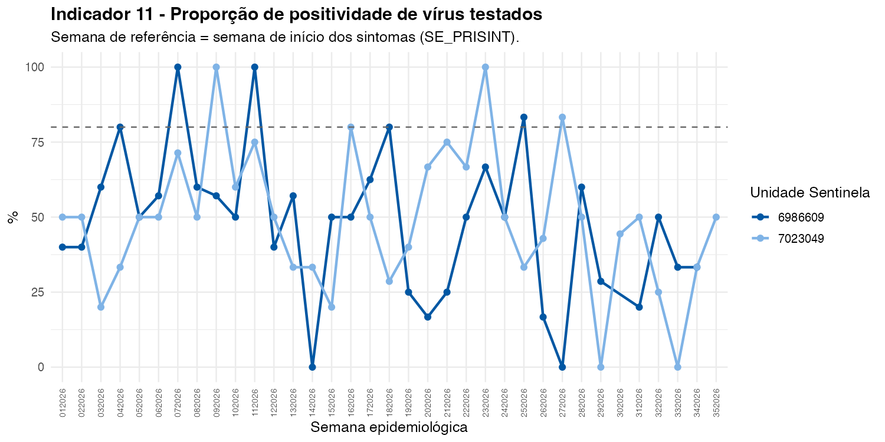
Indicador Estadual
Indicador 14 — Preenchimento do contato com aves/suínos/outro animal
Meta esperada: ≥ 80% (Meta Atingida). Único indicador com fórmula e classificação totalmente descritas na própria NT9 (Anexo 1).
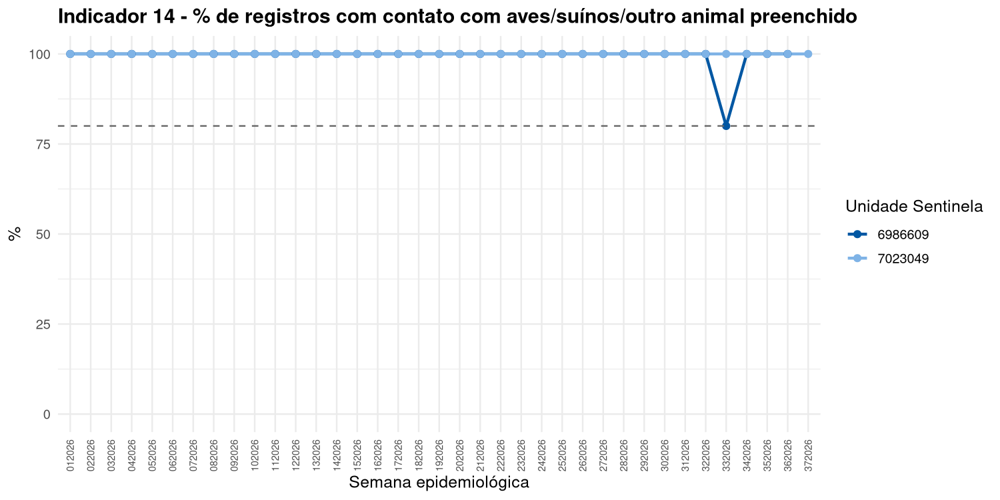
| Unidade sentinela | Total de registros | Campo preenchido | Indicador 14 (%) | Classificação |
|---|---|---|---|---|
| UPA Zona Sul (Maringá) | 169 | 168 | 99.4 | Meta Atingida |
| UPA Sarandi (Sarandi) | 182 | 182 | 100.0 | Meta Atingida |